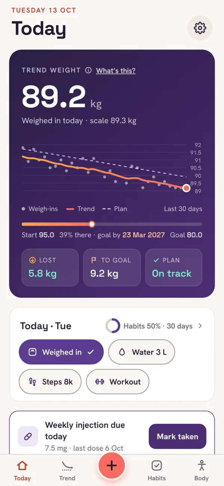
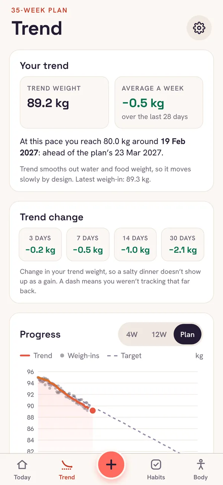
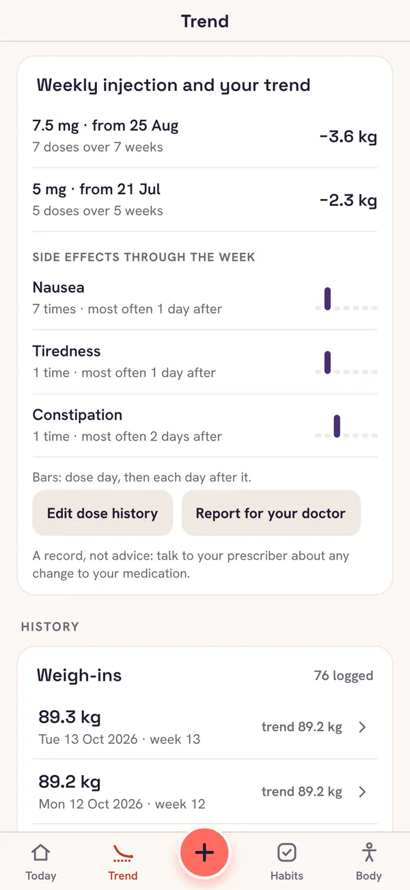
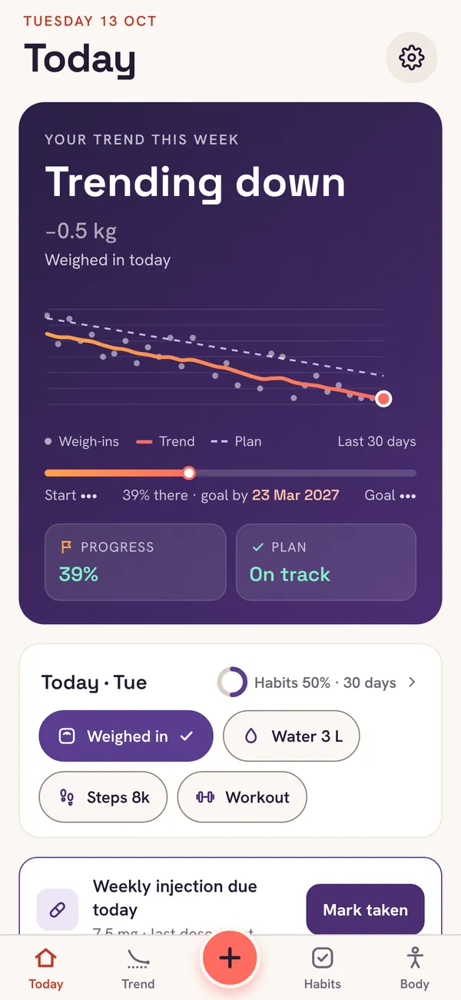
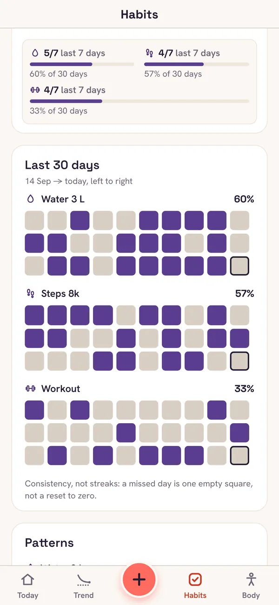

Your trend, not today’s number.
An honest weekly rate.
Your trend at every dose. Plus
Hide the number. Keep the progress.
Consistency, not streaks.





UK prices, bought in the app through Apple. Plus renews until you cancel it in your iPhone’s Settings, and any trial or introductory price is shown before you pay. What you enter in Plus is kept if it ends.
If you restore your new iPhone from an iCloud or computer backup of the old one, Tidemark comes with it. Or, in Tidemark on the old phone, go to Settings → Export backup, save the file somewhere you can reach from the new phone, then use Settings → Restore from backup there.
Your data is only on your phone, so a backup is what gets it back. Tidemark reminds you to make one and shows when you last did. You can lock a backup with a password, so only you can open it.
A day’s weight moves with water, salt, sleep and what you last ate, often by a kilo or more. That’s why Tidemark shows a trend: one high reading moves it a little, and only a real change moves it a lot.
On your iPhone, open Settings, tap your name, then Subscriptions, then Tidemark. You can also get there from Tidemark’s Settings → Manage subscription. Cancel at least 24 hours before the renewal date to avoid the next charge.
Apple handles all payments, so refunds go through Apple: visit reportaproblem.apple.com and sign in with your Apple ID. We can’t see or refund purchases ourselves.
Open Tidemark’s Settings → Restore purchases, signed in with the same Apple ID you bought it with. Plus works on any iPhone signed in to that Apple ID.
No. Its targets, trends and calorie estimates are general guidance from the numbers you enter, and the medication log, side effects and doctor report only record what you enter. Talk to your GP, pharmacist or prescriber about your treatment, especially if you’re pregnant or have a health condition.
If Tidemark shows an error, tap “Email the error to support” on that screen: it fills in the error and the app version, and you see the email before it’s sent. Otherwise, email us and say what you were doing when it happened.
No questions match that. Try another word, or email us below.
Still stuck? Email support@ysbdesigns.uk